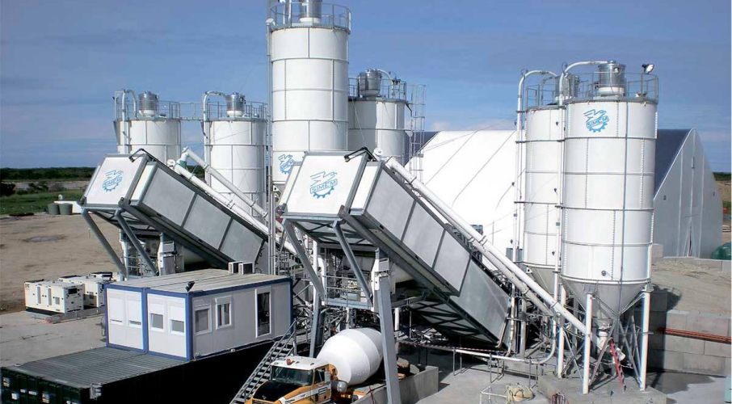

Очистка технологического обор-ия на цементном производстве и заводах ЖБИ
При очистке технологического оборудования и фильтров от шлама металлические рабочие поверхности, детали и узлы полностью промываются и не разрушаются. На цементных заводах таким образом можно удалить застывший и отвердевший бетон с внутренних и внешних поверхностей колонн, емкостей, фильтров и сит. Эффективно удаляются остатки затвердевшего бетонного раствора и цементного шлама:

- Со стенок и днищ емкостей, печей, мельниц и вибрационного оборудования;
- Из внутренних полостей дробилок и транспортных трубопроводов для цемента и раствора;
- Виброформ, лотков, миксеров и каналов подачи раствора и цемента;
- Накопителей раствора и дозирующих узлов;
- Автомобильных кузовов, автомиксеров.
Эффективность и скорость очистки при полной сохранности конструкций в 2 - 3 раза превышают показатели механических методов удаления загрязнений. Затраты на чистку с учетом времени и технологического эффекта можно снизить на 30 - 50 %.
Как работает водоструйная установка
Установка гидроразрушения бетона представляет собой комплекс из плунжерного насоса,
дизельного двигателя, рукавов и лебедки с собственно головкой для подачи воды.
Функциональная часть подается к зоне работ и управляется оператором дистанционно.
Комплекс размещается на автомобиле.
Для питания комплекса водой достаточно присоединения к пожарному и техническому
водопроводу, для чего мы используем собственный комплект стандартных и универсальных
насадок. При отсутствии доступа к оголовкам собственные емкости установки заполняются
водой для автономной работы в течение примерно 15 - 30 минут в зависимости от давления
на головке. Вода может быть взята их емкостей хранения при условии ее технической
чистоты — отсутствия засорения песком, слизью, водорослями.